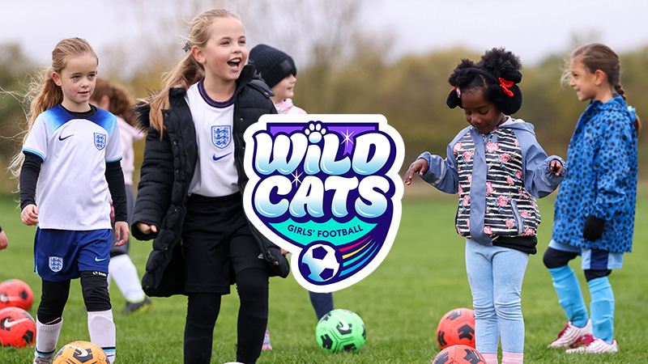
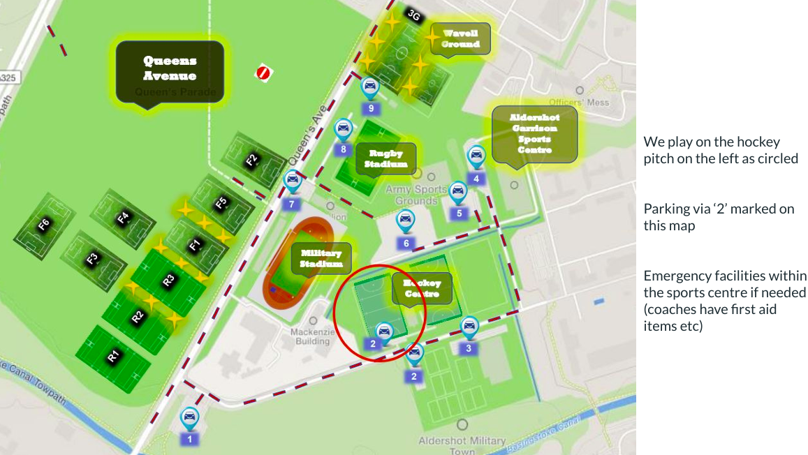

We are proud to offer Wildcats for Girls aged 5-11 Fridays at 6pm til 7 on the hockey pitches at the Aldershot Garrison!
Book Here
Where do we play?
- We play 6-7pm every Friday in term time at the Aldershot Garrison Sports Centre hockey pitches (Prince's Ave, Aldershot, GU11 2LD)
- This is an old style astroturf pitch, outdoors, and under floodlights in the winter months
- Ample parking is available by the hockey pitches or directly adjacent
- There is a central pavilion providing toilet access only and a small amount of covered seating pitch side
- The pitch will be split for all our girls football provision:
- Our U9 and U10 girls teams will share the far end
- Our U8 Snow Leopards and <9yr old Wildcats at the car park end
- Our >9-11yr old and Squad players in the middle section
- One parent/responsible adult for each player must be in attendance throughout the session (in case of a medical issue, emergency situation, requirement for a loo break, to ensure no player is able to leave the pitch alone, etc), watching from outside of the playing area

What Will I Need
- Shin pads must be worn for every training session please
- Trainers only please, the playing surface is not suitable for any studded boots
- A water bottle at every session
- Clothing appropriate to conditions - we play outdoors all season long
- Leggings/under layers may be useful if there are any falls (providing not too warm!)
- First session attended is a free of charge trial - players ‘play at their own risk’ in these sessions
- Thereafter sessions are ‘pay as you play’; £3/session via cash or card (Sum Up machine) - payment to take place in person at the sessions
- Sessions need to be booked in advance via the online FA platform - the link for each session will be posted within the parent WhatsApp group
Useful things to know about Wildcats
- Hart Youth FC is a community grassroots football club based in Fleet
- We are fully volunteer run
- We have a passion for growing girls football in our local community
- In September 2023, we started with 6 x U7/8 girls players, and we have now grown U8, U9, and U10 match playing squads, alongside our first successful season last year of our ‘Wildcats’ centre, and we now provide a ‘Squad’ platform
- ‘Wildcats’ - girls 5-11 years of age
- ‘Squad’ - girls 12-16 years of age
- Our focus is on having fun, making new friends, getting active, and learning the skills of the game, all within a non-competitive and safe environment
- If sufficient interest grows within a specific age group, the club are keen to support the creation of new match playing girls teams - though this would need parent volunteer support (with current coaches actively guiding and assisting as needed)
- Coaches running sessions are FA DBS cleared, safeguarding and first aid trained, and hold FA coaching qualifications
Safeguarding
- If any doubts or concerns please speak out
- We will accept signing your child up for and subsequently attending sessions as provision of consent for them to participate
- If you do not consent to the taking of photos during play please indicate this to the coaching team
- All parents/spectators are encouraged to complete the ‘FA safeguarding awareness for parents & carers’ course via this free online course (<30mins)
- Numbers for your phones:
- Club Welfare Officer (CWO): Josh McCormack 07557229695
- NSPCC 0808 800 500